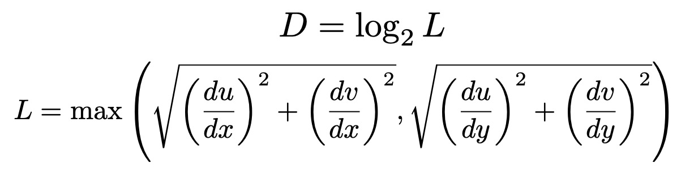

In this project, I implemented a simple rasterizer capable of rendering a simplified version of SVG (Scalable Vector Graphics) files, with features like drawing triangles, supersampling, hierarchical transforms, and texture mapping with antialiasing.
This project gave me insight into how the vector graphics rendering pipeline works and is implemented. Moreover, I learned about the importance of addressing aliasing and the variety of antialiasing methods that can be used to solve this common problem.
Triangle rasterization is used to determine which pixels in the framebuffer lie within the triangle and thus need to be colored. My algorithm is as follows:
fill_pixel() to color it with the appropriate color. 1e-6.
The above screenshot shows the rasterization of basic/test4.svg. There is very visible aliasing at the triangle edges, in particular in the red and pink triangles. The top of the pink triangle is very disconnected since it is very skinny.
After completing this baseline implementation, I performed some optimizations to reduce the rasterization runtime. All of the redundant calculations are done at the start. The first optimization was changing my compute_barycentric_coords function to take in the coefficients needed for calculations as individual floats rather than a reference to a 3x3 matrix, giving a 20% speedup.
Next, I found that nearly half of the rendering time was spent performing the validation checks to see if the calculated coordinates were positive and lay on an edge. After optimizing these checks, I found that a 25% speedup was gained by putting the validation check directly within the rasterization for loop instead of having it as a function call.
Finally, I optimized the sampling algorithm based on the idea that as we sample in the x-direction with a fixed y and step from being inside the triangle to outside the triangle, we know that future samples with the same y but higher x should also be outside the triangle. This reduced the number of samples checked by ~35% and the runtime by another 25% at a sample rate of 1. However, this optimization led to a few blank pixels on basic/test3.svg at higher sample rates, so I made a slight modification to allow for a fixed number of samples after going from inside to outside a triangle.
Here are the effects of each of these changes on the rendering time for basic/test3.svg at a sample rate of 1 averaged out across 4 runs:
| Optimization | Render Time (ms) | Number of samples |
|---|---|---|
| Original | 25.01 | 4236401 |
| Barycentric coordinates calculation | 20.31 | 4236401 |
| Point-in-triangle validation | 15.75 | 4236401 |
| Efficient Sampling | 11.62 | 2758658 |
Altogether these optimizations gave a ~2x speedup at a sample rate of 1 and similar speedups at higher sample rates.
The “jaggies” seen in the triangle rendering are a form of aliasing. Aliasing occurs when the sample rate is below the Nyquist rate of the signal, i.e. the sampling rate is too low compared to the frequency of the underlying signal. In this case, the color changes rapidly at the edge of a triangle, but the display window does not have a high enough resolution to portray this smoothly.
Supersampling is a technique for antialiasing. The idea is to take color samples at multiple locations inside the pixel (not just at the center) to calculate an average color value, equivalent to downsampling a higher-resolution image. This gives a smoothed image since averaging helps to attenuate high frequencies in the image.
To implement supersampling, I first resized the sample buffer to sample_rate times larger and set it so the sample buffer was cleared when redrawing the frame. Within the triangle rasterization function, I looped over √(sample_rate) evenly spaced points per side within each pixel. Once all of the samples were computed, I averaged the colors of the samples for each pixel in resolve_to_framebuffer().
Below are the renderings of basic/test4.svg with sample rates of 1, 4, and 16. Notice how the skinny tip of the pink triangle gets smoothed out as the sample rate increases since the color of each pixel better approximates the color of a high-resolution image. The jaggies at the triangle edges are also eliminated from the smoothing effect supersampling provides.
Sample rate: 1
Sample rate: 4
Sample rate: 16
I implemented 3x3 translation, scaling, and rotation matrices to support basic geometric transforms on polygons in homogeneous coordinates. Using these basic transforms, I made the original robot (left) perform jumping jacks (right).
The barycentric coordinate system is a coordinate system for triangles that expresses any point on the triangle with three scalars , such that , where P is the point's coordinates and A,B,C are the vertex coordinates. This idea of using a linear combination of the vertices' values to represent a point's value within the triangle can be extended beyond position to color or texture.
The above picture shows a triangle with one red, one blue, and one green vertex where the color across the triangle was interpolated using barycentric coordinates. Barycentric coordinates can be used in this way to interpolate the value of some property at a point in the triangle when given the values at the vertices.
Below is a screenshot of basic/test7.svg, which demonstrates how linear interpolation with barycentric coordinates can create smoothly blended colors.
Texture mapping is the process of applying an image onto the surface of an object. This means finding the corresponding texture value for a given screen space pixel coordinate, or pixel sampling. The texture space coordinates for a pixel in screen space can be found by interpolating using barycentric coordinates and the given texture space coordinates of the vertices. Since the corresponding texture space coordinate will likely be non-integral and thus won't directly map to a texel, some sampling method must be used to determine the texture value. Here, I implemented 2 pixel sampling methods: nearest neighbor sampling and bilinear filtering.
For nearest neighbor sampling, I rounded the texture space coordinates to the nearest integer values and retrieved the corresponding texel. For bilinear sampling, I calculated a weighted average of the four nearest texels.
Below are screenshots comparing nearest and bilinear sampling with different sampling rates for a graphic with the Cal logo as the texture.
Nearest neighbor with sample rate = 1
Bilinear with sample rate = 1
Nearest neighbor with sample rate = 16
Bilinear with sample rate = 16
At a sampling rate of 1, there is a very noticeable averaging or smoothing effect when using bilinear as compared to nearest sampling. This helps to reduce the sharp jumps in color and jaggies present in the nearest sampling image. This makes the letters much clearer to read since the boundaries are smoother. Switching to supersampling at a rate of 16 helps to resolve much of the aliasing and has a similar smoothing effect to bilinear sampling. At a sample rate of 16, there is not much noticeable difference from afar between the nearest and bilinear sampling images, but upon zooming in, you can see that bilinear is slightly more smoothed.
In general, the effect of bilinear interpolation is more noticeable when a pixel in screen space has a footprint larger than a pixel in texture space, meaning adjacent screen space pixels would have drastically different texture values, or the texture image has very high frequencies (sharp color changes). This is because bilinear sampling has an averaging effect that attenuates high frequencies, whereas nearest sampling brings out these high frequencies, creating aliasing.
Aliasing artifacts can result from a mismatch between the texture space and pixel space footprints. To solve this, a mipmap, or an image pyramid consisting of levels of progressively lower-resolution representations of the texture image, is first created. Then, level sampling is used to dynamically select the appropriate level of texture detail for each pixel according to its estimated texture footprint. Typically, this involves choosing a higher-resolution texture for objects near the camera and a lower-resolution texture for objects farther away.
To compute the mipmap level, I first estimated and at a point as the difference between the barycentric texture coordinates corresponding to points and , and respectively. These differences were then scaled up by the width and height respectively of the full-resolution texture image. From here, the level D was calculated as follows:

The L_ZERO (level 0) sample method simply always uses level 0, or the highest resolution texture image for sampling. The L_NEAREST (nearest neighbor) method rounds the computed level D to the nearest integer. The L_LINEAR method performs a linear interpolation between the result of sampling at levels and .
As level sampling is orthogonal to pixel sampling, any pixel sampling method can be used with any level sampling method for texture mapping. Additionally, supersampling can be used at the same time. All three of these methods perform antialiasing but come with different tradeoffs.
Pixel sampling has the least computational overhead since we just need to take a weighted average of 4 neighboring values. There is no additional memory usage. However, its simplicity in being a weighted average of neighboring values leads to its limited antialiasing effects and losing some sharpness in the image.
Nearest or linear level sampling requires computing the appropriate mipmap level for each pixel, which involves finding more barycentric coordinates and other computations, and so is more computationally intensive. It also has a memory cost of of the size of the original texture image since we have to store a mipmap. This may have a stronger antialiasing effect since we dynamically adjust the texture resolution.
Supersampling can be the most computationally intensive at high sample rates since the number of samples used scales quadratically with respect to the number of samples per side. This also has the largest memory cost as it requires storing a memory buffer of size sample rate times the original. All of this cost comes with strong antialiasing power as it downsamples a higher-resolution image, allowing much of the original higher-frequency details to be captured.
The pictures below compare the effects of different level and pixel sampling methods when applying the following texture. As described before, the nearest pixel sampling has a blurring effect and the nearest level sampling slightly modifies some of the pixels, although it is not very evident.
L_ZERO + P_NEAREST
L_ZERO + P_LINEAR
L_NEAREST + P_NEAREST
L_NEAREST + P_LINEAR